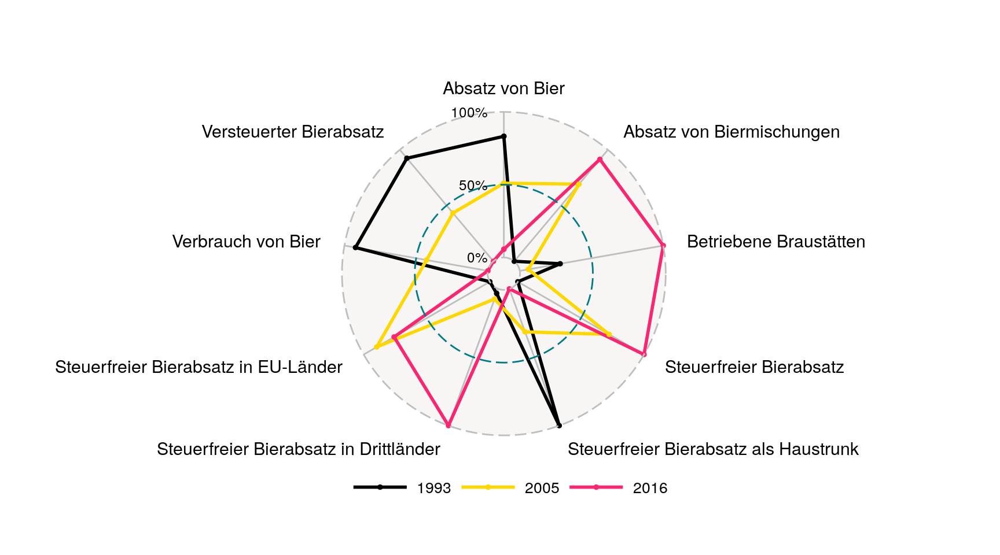

file.apiKey.enc <- system.file("apiKey.R.gpg", package = "nsoApi")
nsoApi::nsoApiGPG(file = file.apiKey.enc,
gpg = NULL,
passphrase = Sys.getenv("NSOAPIGPG"),
keep = FALSE
)
## [1] TRUE
api.param.datenexport <- list(
method = "DatenExport",
kennung = apiKey$GENESIS$kennung,
passwort = apiKey$GENESIS$passwort,
namen = "73421BJ001",
bereich = "oeffentlich",
format = "csv",
werte = "false",
metadaten = "false",
zusatz = "true",
startjahr = "2013",
endjahr = "2014",
zeitscheiben = "",
regionalschluessel = "",
sachmerkmal = "",
sachschluessel = "",
stand = "01.01.2001",
sprache = "de"
)
## retrieve metadata
xml_list_datenexport_meta <- genesisAPI(api.param = api.param.datenexport,
service = "ExportService",
curl = curl)
meta_df <- genesisXMLtoDF(xml.list = xml_list_datenexport_meta,
meta = TRUE)
knitr::kable(meta_df)
| JAHR |
Jahr |
| DINSG |
Deutschland insgesamt |
| VBR023 |
Verbrauch von Bier |
| ABS011 |
Absatz von Bier |
| ABS012 |
Absatz von Biermischungen |
| ABS013 |
Versteuerter Bierabsatz |
| ABS014 |
Steuerfreier Bierabsatz |
| ABS015 |
Steuerfreier Bierabsatz in EU-Länder |
| ABS016 |
Steuerfreier Bierabsatz in Drittländer |
| ABS017 |
Steuerfreier Bierabsatz als Haustrunk |
| HER001 |
Betriebene Braustätten |
|
|
Genesis Data
api.param.datenexport <- list(
method = "DatenExport",
kennung = apiKey$GENESIS$kennung,
passwort = apiKey$GENESIS$passwort,
namen = "73421BJ001",
bereich = "oeffentlich",
format = "csv",
werte = "true",
metadaten = "false",
zusatz = "false",
startjahr = "1993",
endjahr = "2016",
zeitscheiben = "",
regionalschluessel = "",
sachmerkmal = "",
sachschluessel = "",
stand = "01.01.2001",
sprache = "de"
)
## retrieve data
xml_list_datenexport <- genesisAPI(api.param = api.param.datenexport,
service = "ExportService",
curl = curl)
## convert to data frame
data_df <- genesisXMLtoDF(xml.list = xml_list_datenexport)
knitr::kable(data_df[1:n_table,])
| DG |
1993 |
ABS011 |
112141334 |
| DG |
1994 |
ABS011 |
115660265 |
| DG |
1995 |
ABS011 |
115252060 |
| DG |
1996 |
ABS011 |
112806908 |
| DG |
1997 |
ABS011 |
112669814 |
Visualize
library(ggplot2)
library(ggradar)
p <-
data_df %>%
left_join(meta_df$label, by = c("UNIT" = "code")) %>%
select(-DINSG, -UNIT) %>%
rename(year = `ZI-WERT`) %>%
spread(key = label, value = WERT) %>%
mutate_at(vars(-year), funs(scales::rescale)) %>%
## gather(key = UNIT, value = WERT, -year) %>%
## filter(year %in% c(min(year), max(year))) %>%
filter(year %in% c(1993, 2005, 2016)) %>%
ggradar(font.radar = "sans",
grid.label.size = 4,
axis.label.size = 4,
group.point.size = 1,
group.line.width = 1,
plot.extent.x.sf = 1.8) +
scale_color_manual(values = c(
## "#d2223e", # red
"#000000", # black
"gold", # black
## "#ffc20e", # yellow
"#F92672"
)) +
theme(
legend.position = c(0.5, 0),
legend.justification = "center",
legend.direction = "horizontal",
legend.text = element_text(size = 10),
legend.background = element_rect(fill = NULL)
)
p
